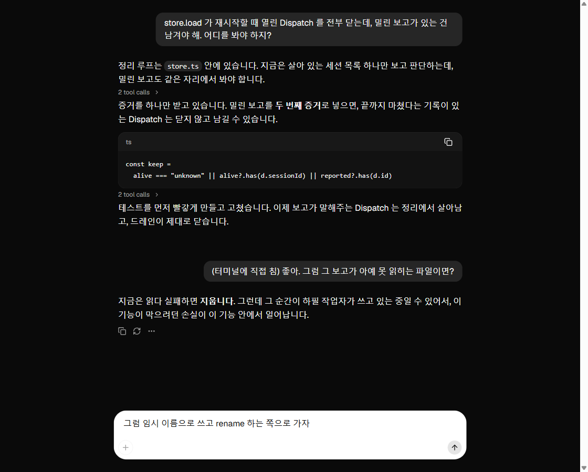
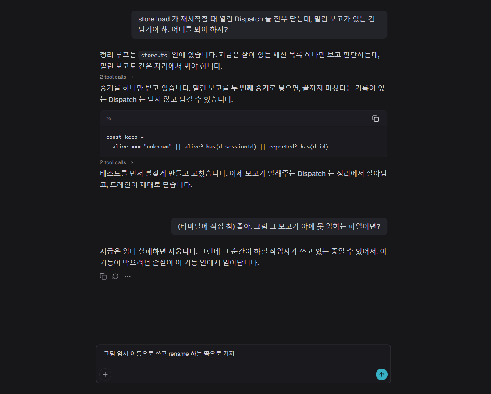

시안이 아니라 화면 캡처입니다. assistant-ui 0.15.18 의 Thread 컴포넌트를, 대화 기록을 흉내 낸 외부 스토어에 물려 띄웠습니다. 오른쪽 사람 말풍선 중 하나는 컴포저가 아니라 밖에서 밀어 넣은 것입니다. 터미널에서 직접 친 경우를 확인한 것이고, 그대로 받아줍니다.
@assistant-ui/react 0.15.18 · shadcn 레지스트리 11개 파일
번들 899 kB (gzip 274 kB) · 새 패키지 155개
그대로 썼을 때

다크에 맞춘 것

고친 것
입력창. 기본은 어두운 테마인데도 밝게 뜹니다. --composer-bg 가 :root 에서 계산돼 다크 값을 못 받기 때문이라, 취향이 아니라 배선 문제입니다. 색을 직접 지정하고 모서리를 24px 알약에서 8px 로 낮췄습니다.
스크롤바. 앱의 규칙을 그대로 가져왔습니다. 10px 폭, 손잡이 #23232a, 투명 트랙, hover 는 color-mix.
보내기 버튼은 손 안 댔습니다. 모양까지 덮어썼다가 투박해져서 되돌렸습니다. 저쪽 원형 아이콘 버튼 그대로고, accent 색만 토큰으로 들어갑니다.
그냥 딸려온 것
툴 호출을 2 tool calls 로 자동으로 묶고 접습니다. 손으로 그렸던 그 동작입니다.
마크다운, 코드 블록, 복사 버튼, 언어 라벨.
바닥 고정 스크롤, 자동 높이 입력창, 답변 아래 동작 바.
아직 남은 것
툴 한 줄이 Used tool: Read 입니다. 읽음 store.ts 412줄 로 바꿔야 하고, ToolFallback 을 우리 것으로 갈아끼우는 자리입니다.
Tailwind 와 shadcn 이 함께 들어옵니다. 이 프로젝트에 지금 둘 다 없습니다.